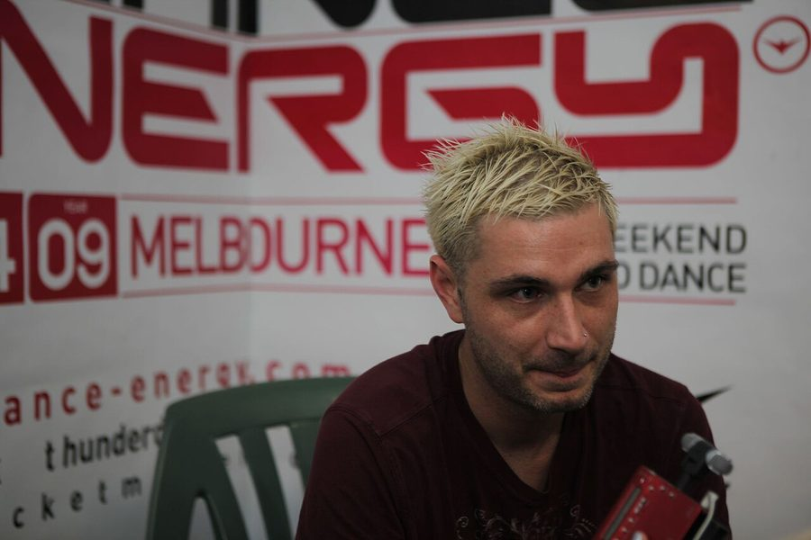

Sean Tyas: Ready to launch


.jpg){kind=link}
Although he’s a native of New York City, since relocating to Europe a few years back Sean Tyas has become something of a modern trance success story. Finding himself well and truly in the thick of it in Europe, Tyas has since been picked up by John Askew’s Discover record label, and had the likes of Armin Van Buuren singing his praise in 2006, calling him “one of the hottest producers around at the moment”. Tyas is about to embark on his first ever Australia tour in May, so ITM tracked him down for a quick Q&A.
Whereabouts in the world are you at the moment, and what have you been up to in the first half of this year?
I’m living in Switzerland right now, actually packing now for the weekend. It’s been a pretty wild running start this year, but I have no plans to slow down for the finish. Been doing a few remixes which you will see released soon, Vincent de Moor ‘Fly Away’, Thomas Datt ‘2v2’, and a few more including one for Above & Beyond and Thomas Bronzwaer.
What’s on the schedule for you for the rest of the year?
I’m really excited about that actually. Obviously there’s my first trip to Australia, and I can’t believe we are already in May. Just a couple more weeks! Other interesting locales I’m looking forward to are Japan, South Africa and Argentina. These are places that, if you told me I would be DJing in 5 years ago, I’d have never believed you. As far as production goes, I want to a do maybe a couple of full vocal originals – with dubs of course – just to see how I do with it. A synth-only track is great, but when there’s an amazing vocal involved, it’s amazing on the floor.
For clubbers in Australia who might not be familiar with your production or DJing, how would you sum up your sound in a nutshell?
Probably somewhere in between real trance – not the new progressive breed – and harder edged trance or tech trance. I’m into big melodies but I love dirty bass and acids. I love techno percussion and edgy distorted quirky noises.
You’ve been a trance DJ and producer for a good many years now. The sound has gone through evolutions and changes over the years, and has recently been noted for taking on other elements like tech, electro and progressive. Where is the scene at currently?
I guess trance did need a few new elements, so it’s interesting to have a few less “rules” when making it. But these days, I really do think trance is the only style that has elements of almost any genre of music. The scene is in different phases in different areas of the globe though, which is actually a great thing, because it keeps the cycle constantly moving.
How do you as an individual fit into the wider scene? Where do you see your niche to be?
I just want people to really go all out dancing. The best nights in my life were spent open-to-close on a dancefloor. So that’s all I really aim for, to give people a nice outlet to vent everything that’s been building up all week. I don’t think house music does it like trance does. The energy level just basically washes the stress of the week away, and that is what I want to appeal to.
You’re a native of New York City, but you’re now residing in Switzerland. Often we see artists relocating to the US to pursue their music career; what was it like for you to relocate to Europe?
It’s smart to relocate to USA if you produce R&B, pop and rock. But if you’re a dance artist, being in Europe is probably better, only because you are close to the market that accepts it more readily. I think if I was still living in New York I would not have had the chance to get many of my first bookings in Europe due to prohibitively expensive flights. It was interesting to move there though. As a typical American I had never been to Europe, but always wanted to, so once I finally came over it was certainly a real cool change, though I had to learn German, which has proved to be a task and half, but it’s getting there.
How much has your career taken off since you made the big move?
Like above, being here and getting in contact with many of the artists and DJs that I deal with on an everyday basis, like John O’Callaghan and John Askew, helped not only to stay inspired to work, it helped to bring IN work. And the work that was done in the studio has led to the bookings. I think production and DJing have become so interlinked, that it’s absolutely required to do both at this point.
Trance is a very European sound, and is still growing a presence in America. But you’ve been into the scene since trance had its ‘golden year’ in 1999. What attracted you to the sound, and was it difficult being an enthusiast and living in the US?
In a way, yeah. New York has its own dance scene, primarily house, and really if you ask me it’s been stagnant since 97… That’s probably half the reason I moved. That’s the bulk of the club crowd, one that likes things as they are, and that’s fine… But not for me. But as for the trance scene, there are parts of America where it’s very strong, like California and several middle states. America’s size shows the same separation of genres, it’s like comparing the UK to France.
One of the biggest developments in your career recently was getting signed to the Discover record label, the outfit run by DJ and producer John Askew. How did you pull this off?
I just emailed an mp3 of ‘Lift’ to his address from his artist webpage. John’s been quite a mentor ever since, and he’s really behind all the artists on Discover. It wasn’t a major feat to get signed really, I just worked non-stop and started submitting.
And how has being singed to Discover upped your presence internationally?
I certainly think so. ‘Lift’ really “sealed the deal”, I think due to the big playlisting of it. That helped heaps with everything. Every DJ I knew of was playing it, and that’s just a huge help as far as getting one’s name out to the world.
Armin Van Buuren described you last year as one of the “hottest producers around at the moment”. What does it feel like to receive such an accolade from your high ranking contemporaries?
I can’t really explain how that feels. I guess it feels absolutely amazing to read that, but of course it puts huge pressure on me now as well!
You’ve remixed some pretty big names in your time, the likes of Christina Aguilera, Pink and Moby. Do you find it challenging molding their music into the trance sound?
It was when I was only starting out, so the Pink remix ended up being more in the house vein, and the Aguilera one was actually not even a remix, it was the original one on one of her albums. Living in New York that’s just basically what you “had to do”. The Moby one was trance, but ugh, I wish I could go back and redo that now! The New York projects were quite different from what I am doing now, but living in New York and just starting out, I just did what I was given to me.
Finally, what can we expect form you when you tour Australia?
Just expect more new stuff, and a slowly evolving, changing style. But the goal will remain very much the same; up-tempo, driving energy on the floor.
Sean Tyas plays Transmission in Sydney and Melbourne this May:
May 25 – Melbourne
May 26 – Sydney